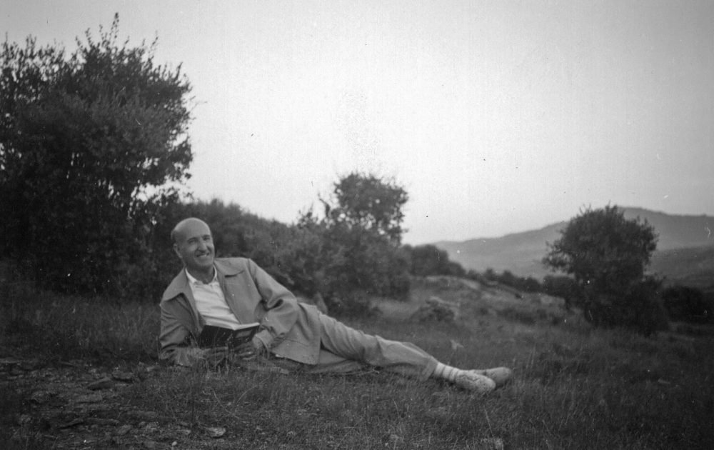

Hijo de una familia de la burguesía española, su padre fue ingeniero de ferrocarriles. El poeta nació en Sevilla en 1898 pero pasaría su infancia en Málaga, donde compartió estudios con Emilio Prados. Se trasladó a Madrid donde cursó estudios de Derecho y Comercio. En 1919 se licencia en Derecho y obtiene el título de intendente mercantil. El 6 de octubre de 1977 la Academia Sueca le concede el Premio Nobel de Literatura «por una obra de creación poética innovadora que ilustra la condición del hombre en el cosmos y en nuestra sociedad actual, a la par que representa la gran renovación, en la época de entreguerras, de las tradiciones de la poesía española».
Al cielo El puro azul ennoblece mi corazón. Sólo tú, ámbito altísimo inaccesible a mis labios, das paz y calma plenas al agitado corazón con que estos años vivo. Reciente la historia de mi juventud, alegre todavía y dolorosa ya, mi sangre se agita, recorre su cárcel y, roja de oscura hermosura, asalta el muro débil del pecho, pidiendo tu vista, cielo feliz que en la mañana rutilas, que asciendes entero y majestuoso presides mi frente clara, donde mis ojos te besan. Luego declinas, ¡oh sereno, oh puro don de la altura!, cielo intocable que siempre me pides, sin cansancio, mis besos, como de cada mortal, virginal, solicitas. Sólo por ti mi frente pervive al sucio embate de la sangre. Interiormente combatido de la presencia dolorida y feroz, recuerdo impío de tanto amor y de tanta belleza, una larga espada tendida como sangre recorre mis venas, y sólo tú, cielo agreste, intocado, das calma a este acero sin tregua que me yergue en el mundo. Baja, baja dulce para mí y da paz a mi vida. Hazte blando a mi frente como una mano tangible y oiga yo como un trueno que sea dulce una voz que, azul, sin celajes, clame largamente en mi cabellera. Hundido en ti, besado del azul poderoso y materno, mis labios sumidos en tu celeste luz apurada sientan tu roce meridiano, y mis ojos ebrios de tu estelar pensamiento te amen, mientras así peinado suavemente por el soplo de los astros, mis oídos escuchan al único amor que no muere.Volver al índice